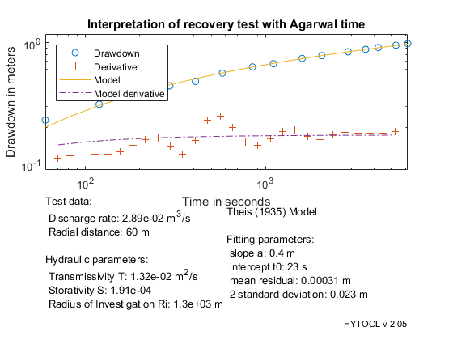

Demo example for the agarwal time
This demonstrates the interpretation of a recovery test after a constant rate or variable rate test.
MIT License Copyright (c) 2017 Philippe Renard - University of Neuchâtel (CHYN)
Contents
This demo contains two examples: the first shows the interpretation of a recovery test after a constant rate test with real field data, the second is a synthetic example comparing the interpretation of the recovery after a multiple rate test with a standard Theis interpretation or with the Agarwal technique.
Field example: recovery after constant rate
The data set for this example comes from: Todd D.K.(1980), Ground Water Hydrology, John Wiley & Sons, New York, Batu, V., Aquifer Hydraulics: A Comprehensive Guide to Hydrogeologic Data Analysis, John Wiley, New York, 1998. Example 4-12, Pages 183-186
The data are from an observation well located 60 m away from the pumping well. Let us first load the data and plot them.
[t,s]=ldf('agt_ds1.dat');
| HYTOOL Demo |
We then define the values of the parameters that are required for the interpretation:
tp=240*60; % Duration of pumping qp=2500/24/60/60; % pumping rate r= 60; % distance to the pumping well
Once the data have been loaded and the parameter defined, they can be interpreted. First, we calculate the Agarwal time. Then we use it to estimate the parameter p and fit the Theis solution to the data. The result is controlled graphically with the trial function.
[ta,sa] = agarwal_time( t, s, tp); % compute the Agarwal time p=ths_gss(ta,sa); p=fit('ths',p,ta,sa); ths_rpt(p,ta,sa,[qp,r],'Interpretation of recovery test with Agarwal time')
Norm of Norm of
Iteration SSE Gradient Step
-----------------------------------------------------------
0 0.0024603
1 0.00180626 0.0361068 2.76834
2 0.00178305 0.000910959 0.457629
3 0.00178303 1.6839e-06 0.0162605
4 0.00178303 2.05528e-09 0.000333043
Iterations terminated: relative change in SSE less than OPTIONS.TolFun
 The folowing values are obtained: T = 1.3e-2 m2/s and S = 1.9 e-4
They are identical to the values found by Batu (1998): T = 1.3 e-2 m2/s and S = 1.9 e-4